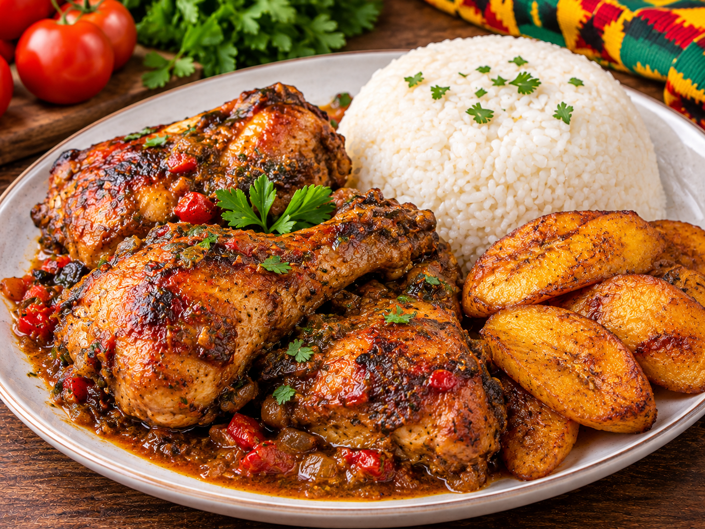

Poulet Braisé 🇹🇬
Le poulet braisé est un plat savoureux et très apprécié au Togo. Mariné avec des épices et des aromates puis grillé, il est idéal pour un repas convivial.

🛒 Ingrédients
- 1 poulet
- Oignon
- Ail
- Gingembre
- Poivre
- Piment selon le goût
- Sel
- Huile
- Citron
👩🏽🍳 Préparation
- Nettoyer soigneusement le poulet et le découper en morceaux.
- Préparer une marinade avec l'oignon, l'ail, le gingembre, le poivre, le citron, le sel et un peu d'huile.
- Mélanger les morceaux de poulet avec la marinade.
- Laisser mariner afin que les épices pénètrent bien dans la viande.
- Faire précuire le poulet jusqu'à ce qu'il commence à devenir tendre.
- Faire griller les morceaux de poulet au barbecue ou au grill.
- Retourner régulièrement les morceaux jusqu'à obtenir une belle couleur dorée.
🍲 Accompagnement
Le poulet braisé peut être accompagné de frites, de banane plantain, de riz, de légumes ou d'une sauce pimentée.
💡 Petit conseil
Une bonne marinade donne beaucoup plus de goût au poulet. Laissez donc reposer le poulet suffisamment longtemps avant de le griller.